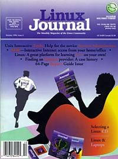

Shutdown Archive web server
Search:
Linux Journal
Issue #6/October 1994

Features
Messages—A Multi-Media Mailer
by Terry Gliedt
Sent talking pictures to your friends and family
Mobile Computing with Linux
by Marc E. Fiuczynski
An introduction to “nomadic computing” with Linux.
Learning C++ With Linux
by Jeff Tranter
Resources for learning C++ under Linux.
The Joy (and Agony) of SLIP
by Warren Baird
One way to connect to the Internet.
Tutorial: Emacs for Programmers
by Matt Welsh
GNU Emacs as a complete development environment
News & Articles
Selecting a Linux CD
by Phil Hughes
Report from the Front: The Linux Review Group
by Magnus Y. Alvestad
Linux Journal
Demographics
Kernel 1.2 Code Freeze Announced
by Linus Torvalds
Harbor
by Michael K. Johnson
Linux Events
Cooking With Linux
by Matt Welsh
Linux Programming Hints
by Michael K. Johnson
What's GNU
Texinfo
by Arnold Robbins
Overview of the Debian GNU/Linux System
by Ian Murdock
Reviews
Product Review
Motif 1.2.3 Runtime and Development System
by Dale A. Lutz
Product Review
Unix Interactive Tools
by Clarence Smith, Jr.
Product Review
Crisp Text Editor
by Robert Broughton
Columns
Letters to the Editor
Stop the Presses
New Products
Archive Index
Shutdown Archive web server
Search:
Copyright © 1994 - 2018
Linux Journal
. All rights reserved.